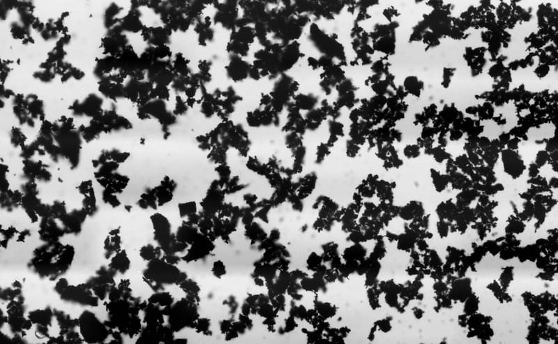
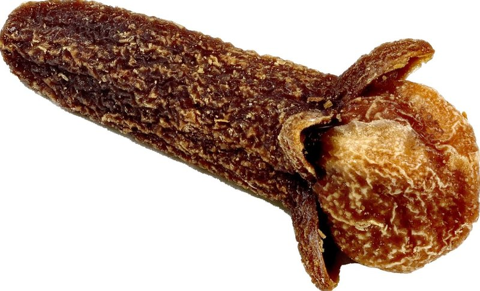
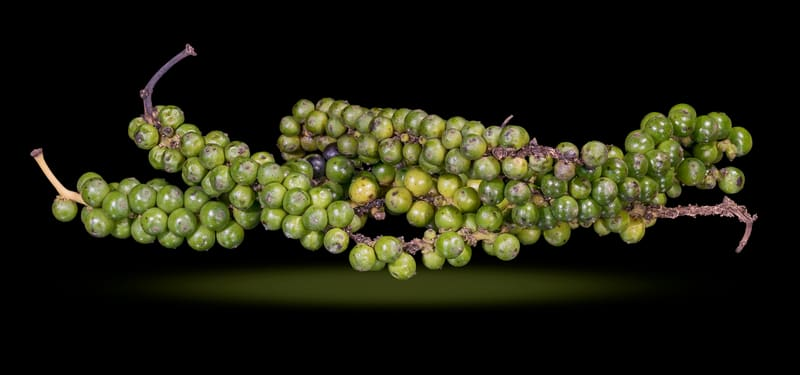

Bark · South America
Tabebuia impetiginosaPau d'arco
A forest tree from Brazil, Paraguay and northern Argentina that flowers pink before it comes into leaf. The bark is the part usually sold, under the names pau d'arco or lapacho.
Pack photography heldLabel reprint pending
Pack photography is held until the label is reprinted. The pictures here are of the botanicals, not of the jar.
Formula 01 · The bitter
£39.9950 capsules · 25 days · £1.60 a day
There are more people this one is not for than anything else we sell. Read the sheet, and if you are not sure, ring the shop on 07946 806533, Tuesday to Sunday. Reiss or whoever is on the counter will talk you through it.
Nine ingredients. Seven botanicals: Tabebuia impetiginosa · Momordica charantia · Petiveria alliacea · Syzygium aromaticum · Dysphania ambrosioides · Artemisia absinthium · Piper nigrum.
Then psyllium husk, and activated charcoal made from organic coconut shells. Both are declared ingredients, not fillers. The capsule is vegan; the shell material is not named on the listing, so we do not name one here.
Two capsules a day, with 500 ml of water. Not more than two in a day. A course runs to the end of the jar, 25 days, and then you stop.
One course every four months at the most. If you finish a jar at the end of September, the next one is the end of January at the earliest.
The listing prints no storage instruction, so here is the plain one. Keep the jar closed, somewhere cool and dry, out of the sun. Capsules do not want the fridge and they do not want a steamy kitchen shelf.
Keep it out of reach of children.
Not in pregnancy or while breastfeeding. Not if you have epilepsy or any history of seizures. Those two are the standard cautions for wormwood, Artemisia absinthium, and this formula contains it. Wormwood is taken in short courses, which is what the four month gap is about.
Activated charcoal can reduce the absorption of medicines taken by mouth, including the contraceptive pill. Leave at least two hours between this and anything else you take. If you are on any medicine at all, ask your GP or pharmacist before you start. It is not for children.
Sent out from 599 Smithdown Road, Liverpool, Tuesday to Sunday. UK delivery is free over £50, or you can collect from the shop between 10 and 6, any day except Monday.
The routine

Two capsules, once a day. The printed limit is two in a day, so it is not four, and not two twice.

Take them with 500 ml of water. There is psyllium husk in the formula and it swells in water, so give it the full glass.

Keep two hours clear of any medicine. Activated charcoal can reduce how much of a tablet gets absorbed, the contraceptive pill included.

Twenty-five days, then stop. Leave at least four months before you open another jar. Reiss on the stop date.
What is on the inside
In the order the label declares them. Every picture on these cards is a photograph of the species, taken by somebody else and credited at the foot of the page, and none of them is of the material in our own sacks. For three of the nine we found no photograph at all, and those frames are left empty rather than filled with a stand-in. Where a picture elsewhere on this page is a generated scene rather than a photograph, it says so.
Bark · South America
A forest tree from Brazil, Paraguay and northern Argentina that flowers pink before it comes into leaf. The bark is the part usually sold, under the names pau d'arco or lapacho.
Gourd · Asia
A climbing gourd grown across South Asia, southern China and the Caribbean, and cooked as a vegetable in all three. It is picked green for the kitchen, and the one in the picture has been left on the vine to ripen orange. It is about the most bitter thing anybody eats on purpose.
No photographof the plant we buy
Herb · Caribbean
A Caribbean and Central American herb that smells strongly of garlic, which is what the alliacea in the name refers to. Called anamu across much of Latin America.

Spice · Indonesia
Dried flower buds from a tree native to the Maluku Islands, picked before they open. The same spice that goes into a ham, and the one ingredient here that also appears on Seaking's declared list.
No photographof the plant we buy
Herb · Mexico
A strong smelling Mexican herb, cooked with black beans in Oaxaca and Puebla. Older books file it under Chenopodium ambrosioides, which is the same plant renamed.
Bitter herb · Europe
The bitterest plant in the European herbal, and the one that gives absinthe and vermouth their names. It is also the reason this jar carries a stop date and a list of people who should leave it alone.

Spice · India
The fruit of a climbing vine, picked green and dried until it wrinkles and goes black. Most of the crop grows in Kerala, Vietnam and Brazil.
No photographof the plant we buy
Fibre · Plantago ovata
The husk of the Plantago ovata seed, grown mostly in Gujarat and Rajasthan and milled to a pale flake. It swells in water, which is why the protocol asks for a full 500 ml.
Charcoal · Coconut shell
Coconut shell burned and then treated with steam until it is full of pores. It is declared as an ingredient here rather than used as a filler, and it is the reason for the two hour rule on the sheet below.
The bitter · 01
Everything we can tell you about what is in the jar, including the figures we do not have and will not print.
| Makeup | Seven botanicals, plus psyllium husk and activated charcoal, which comes to nine ingredients and no tenth. |
|---|---|
| Dose | 800 mg per vegan capsule |
| Count | 50 capsules · 25 day supply · £39.99, which is £1.60 a day while a course runs |
| Botanicals | Tabebuia impetiginosa · Momordica charantia · Petiveria alliacea · Syzygium aromaticum · Dysphania ambrosioides · Artemisia absinthium · Piper nigrum |
| Fibre | Psyllium husk |
| Charcoal | Activated, from coconut shell |
| Excipients | The capsule is vegan; the shell material is not named on the listing, so we do not name one here. Psyllium husk and activated charcoal are declared ingredients, not fillers. |
| Protocol | Two capsules daily with 500 ml water, for up to 25 days. Then leave at least four months. |
| Sourcing | Botanicals described as wildcrafted on the listing. We hold no harvest record for each of the nine. |
| Not printed | We do not print a milligram split between the nine, an extract ratio, or a thujone figure for the wormwood. Nobody has measured those for this jar, so there is no number we could stand behind. Reiss on what that means. |
| Suitable for | Vegans. Adults. |
| Not for | Anyone who is pregnant or breastfeeding. Anyone with epilepsy or a history of seizures. Children. If you take any medicine, including the contraceptive pill, speak to your GP or pharmacist first. |
Activated charcoal can reduce the absorption of medicines taken by mouth, including the contraceptive pill. Leave at least two hours between this and any medication, and speak to your GP or pharmacist before starting any supplement. Do not exceed two capsules a day. Food supplements should not be used as a substitute for a varied and balanced diet and a healthy lifestyle. Keep out of reach of young children.
Nine ingredients, the milligrams, the protocol, the limit and the list of people who should not take it are all on this page. What a bitter does in a body is not something we are permitted to say, so we leave that out.
From Reiss
Wormwood is in this formula, and wormwood is not a plant you take for months. That is not my rule, it is the old rule, and every herbal I own says a version of it: short courses, then leave it. So the pack says one course of 25 days, and then four months before the next one.
Two capsules a day for 25 days is exactly one jar. There is no way to take it as directed and still need a second jar inside four months. I would rather that were obvious from the shelf than buried in the small print.
A bitter is not a daily habit, and I would rather tell you the limit than sell you four courses a year.
The other thing on this page I want you to read is the list of who it is not for. Pregnancy, breastfeeding, epilepsy or any history of seizures. If you are on medicine of any kind, there is activated charcoal in here and it can pull the strength out of a tablet, so keep two hours between them and ask your pharmacist. None of that is me being careful with the wording, it is the shape of the thing.
Reiss Davies Ausar
599 Smithdown Road, Liverpool
Ours, next to what we usually see on the jars people bring into the shop.
| On the label | Decolonise | Typical listing |
|---|---|---|
| Every ingredient named in Latin | ✓ | "Proprietary blend" |
| A count you can check, not "20+ herbs" | ✓ | Rarely a number |
| Wormwood declared by name where it is present | ✓ | Often inside a blend |
| A printed limit on how long to take it | ✓ | "As long as you like" |
| A printed gap between courses | ✓ | Rarely stated |
| The interaction with medicines on the page | ✓ | Usually in the footer, if at all |
| Somebody to ask, at a counter | ✓ | A contact form |
The right-hand column is what we most often see on the jars customers bring in. It is not a claim about any particular brand, and some jars out there do tick every box.
This one is a course with an end date. These are the ones you can take every day. Reiss writes them up in the journal.

Cold-water Chondrus crispus gel with four algae from three families. One tablespoon each morning, which this is not.
Choose a size
The Northern Soul formula in a capsule. 50 × 800 mg, 75 µg iodine each. Clove is on its list too.
Add to bag
One ingredient, Hericium erinaceus, whole fruiting body. No rice flour in the capsule.
Add to bag
Altai mineral resin, lab tested. A pea-sized piece in warm water.
Add to bagFrom the journal
The nine ingredients as a classic bitter, what Artemisia absinthium and thujone are, why the pack says one course every four months at the most, and who should not take it at all.
Read the article